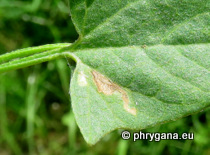

Makino ex Nakai, 1925")

| Phrygana: la Nature en Crète principalement, mais aussi d'ailleurs ... |
|  |
|
|
| Stigmella freyella | Pseudosasa japonica | Populus tremula |
| Espèces: 1251--- Faune: 503 -- Flora: 725 -- Galles (Bacteria): 2 -- Champignons: 20 -- Lichens: 1 | |||||
| Nouveautés | |||||
| Flora: | Solanum melongena | Fauna: | Liriomyza bryoniae | Flora: | Ailanthus altissima |
| Fungi: | Rhytisma acerinum | Flora: | Parthenocissus inserta | Flora: | Dipsacus fullonum |
| Flora: | Lysimachia vulgaris | Fauna: | Arctia caja | Flora: | Vicia sepium |
| 08 janvier 2022 |